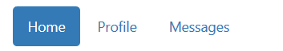
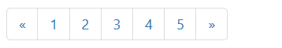

效果图：< div class="btn-group" role="group" aria-label="..."> < button type="button" class="btn btn-default">Left< /button> < button type="button" class="btn btn-default">Middle< /button> < button type="button" class="btn btn-default">Right< /button> < /div>
效果图：< div class="btn-toolbar" role="toolbar" aria-label="..."> < div class="btn-group" role="group" aria-label="...">...< /div> < div class="btn-group" role="group" aria-label="...">...< /div> < div class="btn-group" role="group" aria-label="...">...< /div> < /div>
效果图：< div class="btn-group" role="group" aria-label="..."> < button type="button" class="btn btn-default">1< /button> < button type="button" class="btn btn-default">2< /button> < div class="btn-group" role="group"> < button type="button" class="btn btn-default dropdown-toggle" data-toggle="dropdown" aria-haspopup="true" aria-expanded="false"> Dropdown < span class="caret">< /span> < /button> < ul class="dropdown-menu"> < li>< a href="#">Dropdown link< /a>< /li> < li>< a href="#">Dropdown link< /a>< /li> < /ul> < /div> < /div>
效果图：< div class="btn-group"> < button type="button" class="btn btn-default dropdown-toggle" data-toggle="dropdown" aria-haspopup="true" aria-expanded="false"> Action < span class="caret">< /span> < /button> < ul class="dropdown-menu"> < li>< a href="#">Action< /a> < li>< a href="#">Another action< /a>< /li> < li>< a href="#">Something else here< /a>< /li> < li role="separator" class="divider">< /li> < li>< a href="#">Separated link< /a>< /li> < /ul> < /div>
效果图：< div class="btn-group"> < button type="button" class="btn btn-danger">Action < button type="button" class="btn btn-danger dropdown-toggle" data-toggle="dropdown" aria-haspopup="true" aria-expanded="false"> < span class="caret">< /span> < span class="sr-only">Toggle Dropdown< /span> < /button> < ul class="dropdown-menu"> < li>< a href="#">Action< /a>< /li> < li>< a href="#">Another action< /a>< /li> < li>< a href="#">Something else here< /a>< /li> < li role="separator" class="divider">< /li> < li>< a href="#">Separated link< /a>< /li> < /ul> < /div>
1.< div class="input-group"> < span class="input-group-addon" id="basic-addon1">@< /span> < input type="text" class="form-control" placeholder="Username" aria-describedby="basic-addon1"> < /div>
效果图：@2.< div class="input-group"> < input type="text" class="form-control" placeholder="Recipient's username" aria-describedby="basic-addon2"> < span class="input-group-addon" id="basic-addon2">@example.com< /span> < /div>
效果图：@example.com3.< div class="input-group"> < span class="input-group-addon">$< /span> < input type="text" class="form-control" aria-label="Amount (to the nearest dollar)"> < span class="input-group-addon">.00< /span> < /div>
效果图：$ .004.< label for="basic-url">Your vanity URL< /label> < div class="input-group"> < span class="input-group-addon" id="basic-addon3">https://example.com/users/< /span> < input type="text" class="form-control" id="basic-url" aria-describedby="basic-addon3"> < /div>
效果图：https://example.com/users/
< div class="row"> < div class="col-lg-6"> < div class="input-group"> < span class="input-group-addon"> < input type="checkbox" aria-label="..."> < /span> < input type="text" class="form-control" aria-label="..."> < /div> < /div>
效果图：
< div class="col-lg-6"> < div class="input-group"> < span class="input-group-addon"> < input type="radio" aria-label="..."> < /span> < input type="text" class="form-control" aria-label="..."> < /div> < /div> < /div>
效果图：
效果图： < ul class="nav nav-pills"> < li role="presentation" class="active">< a href="#">Home< /a>< /li> < li role="presentation">< a href="#">Profile< /a>< /li> < li role="presentation">< a href="#">Messages< /a>< /li> < /ul>
效果图：< nav aria-label="Page navigation"> < ul class="pagination"> < li> < a href="#" aria-label="Previous"> < span aria-hidden="true">«< /span> < /a> < /li> < li>< a href="#">1< /a>< /li> < li>< a href="#">2< /a>< /li> < li>< a href="#">3< /a>< /li> < li>< a href="#">4< /a>< /li> < li>< a href="#">5< /a>< /li> < li> < a href="#" aria-label="Next"> < span aria-hidden="true">»< /span> < /a> < /li> < /ul> < /nav>
效果图：< a href="#">Inbox < span class="badge">42< /span>< /a> < button class="btn btn-primary" type="button"> Messages < span class="badge">4< /span> < /button>
< div class="jumbotron"> < h1>Hello, world!< /h1> < p>...< /p> < p>< a class="btn btn-primary btn-lg" href="#" role="button">Learn more< /a>< /p> < /div>
效果图：< div class="progress"> < div class="progress-bar" role="progressbar" aria-valuenow="60" aria-valuemin="0" aria-valuemax="100" style="width: 60%;"> 60% Complete < /div> < /div>
效果图：< div class="progress"> < div class="progress-bar progress-bar-success progress-bar-striped" role="progressbar" aria-valuenow="40" aria-valuemin="0" aria-valuemax="100" style="width: 40%"> < span >40% Complete (success)< /span> < /div> < /div> < div class="progress"> < div class="progress-bar progress-bar-info progress-bar-striped" role="progressbar" aria-valuenow="20" aria-valuemin="0" aria-valuemax="100" style="width: 20%"> < span >20% Complete< /span> < /div> < /div> < div class="progress"> < div class="progress-bar progress-bar-warning progress-bar-striped" role="progressbar" aria-valuenow="60" aria-valuemin="0" aria-valuemax="100" style="width: 60%"> < span class="sr-only">60% Complete (warning)< /span> < /div> < /div> < div class="progress"> < div class="progress-bar progress-bar-danger progress-bar-striped" role="progressbar" aria-valuenow="80" aria-valuemin="0" aria-valuemax="100" style="width: 80%"> < span class="sr-only">80% Complete (danger) /span> < /div> < /div>